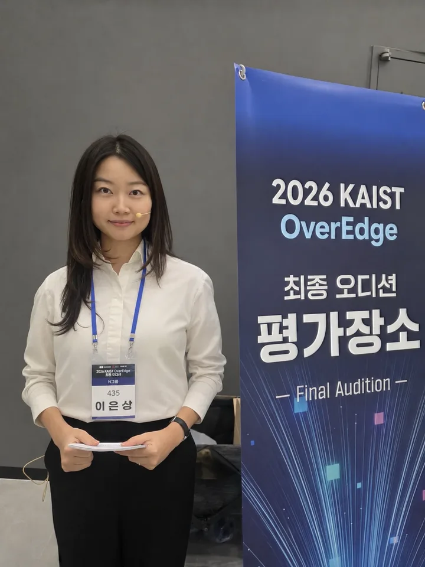

01 · AI 기초
딥러닝·자연어처리 기초
- 딥러닝: 신경망 학습 원리, CNN·RNN, Attention과 Transformer
- 자연어처리: 언어 모델(BERT·GPT), PyTorch·HuggingFace 실습
KAIST 창업원과 KAIST AI대학원이 공동 주관한 AI Agent 프로그램 1기에 참가했습니다. 두 달 동안 KAIST AI대학원 교수진에게 딥러닝 기초부터 에이전트 개발, 사전학습 모델 평가까지 배웠습니다. 교육 기간에 시작한 제품 '피플로'를 이어진 두 달 동안 다듬어 최종 오디션에서 발표했습니다.

창업이나 사업화보다는 검증이 목적이었습니다. 12년 동안 인사 현장에서 겪은 문제를 MBA에서 배운 관점으로 다시 정의하고 AI로 풀어 본 방식과 제품을, KAIST라는 기술 전문 기관의 단계별 심사로 검증받고 싶었습니다. 동시에 문제 정의부터 개념검증(PoC)까지 직접 만들어 보며 그 방식이 실제로 작동하는지 확인했습니다.
단계마다 심사를 통과해야 다음으로 갈 수 있었습니다. 남색 칸이 심사입니다.
| 심사 | 평가한 것 | 심사위원 |
|---|---|---|
| 선발 인터뷰 | AX(AI Transformation) 구현 가능성, 기술과 시장에 대한 이해, 기업가정신 | 벤처캐피털(VC), AI 전문가, 창업 교육가 |
| 1차 오디션 | 배운 AI로 자기 사업 모델을 얼마나 에이전트로 구현했는지, AI로 초기 단계의 자원 한계를 넘어 문제를 푸는 능력 | |
| 최종 오디션 | 100점 가운데 기업가정신과 실행력 30, 기술 우수성과 AI 활용 역량 30, 시장성과 글로벌 확장성 40 | 실리콘밸리에서 활동하는 멘토, 빅테크 기업 VP 출신, 교수진 |
강의는 KAIST AI대학원 교수진이 맡았습니다.
01 · AI 기초
02 · 에이전트 개발
03 · 모델 활용과 평가
04 · 산업 적용
05 · 사업화
| 구분 | 피플로에 구현한 것 |
|---|---|
| 제품 요구사항 문서 (PRD) | 만들 범위와, AI가 결론을 내면 안 되는 법률 판단 다섯 영역을 먼저 정함 |
| 결정 기록 (ADR) | 설계 결정을 하나씩 문서로 남김 |
| 데이터 구조 설계 (ERD) | 결정 기록은 덧붙이기만 가능, 핵심 구조 변경은 사람 승인 필요 |
| 데이터 접근 제어 (RLS) | 고객사 자료가 담기는 표 전부에 데이터베이스 격리 강제 |
| 검색과 출처 검증 (RAG) | 벡터 DB 없이 공식 원문만 AI에 주고, 인용이 원문에 있는지 서버가 7단계로 검증 |
| AI와 규칙의 분리 | AI는 초안, 규칙 엔진은 계산, 확정은 사람 |
| 에이전트 하네스 (CLAUDE.md, Skill) | 절대 규칙 10개와 세션별 작업 범위, 시험 파일은 승인 없이 못 고치게 잠금 |
| 에이전트형 워크플로 | 총괄·코어·화면 세션으로 나눠 개발, 다른 회사 모델이 읽기 전용 검토 |
| 자동 테스트 (Playwright) | 금지 동작 차단 시험 12종, 브라우저 시험 29건 |
| AI 평가 (정확도, 환각률, 출처 충실성) | 지표 8개와 합격선을 사람이 정하고 10월에 두 차례 측정 |
| 자동 검사와 배포 (GitHub Actions) | 자동 검사를 통과한 변경만 병합, 체험 데모는 Render에 배포 |
자세한 내용은 피플로 케이스 스터디에 있습니다.